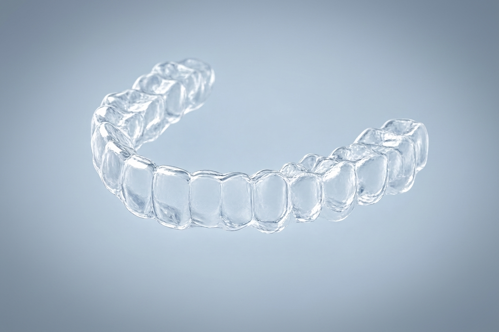

Fondamenti
Cos'è un bite dentale?
Una panoramica chiara su cosa sono i bite e a cosa possono servire.
Leggi la guida →Tecnologia · Odontoiatria · Postura
Un approccio personalizzato che mette in relazione dentatura, occlusione e postura attraverso il supporto di professionisti qualificati.
Il concept
HARMONY nasce dall'idea che dentatura, occlusione e postura non siano elementi isolati, ma parti di un unico sistema da osservare insieme, con il supporto di un professionista qualificato.
Perché HARMONY
Ogni fase del percorso è supportata da strumenti digitali pensati per la precisione.
01
Un approccio metodico, basato sulla valutazione individuale di ogni caso.
02
Ogni bite viene pensato sulla base delle caratteristiche del singolo paziente.
Il prodotto
Il bite HARMONY è pensato come un dispositivo di precisione, il risultato di un processo digitale e di una valutazione clinica personalizzata — non un semplice accessorio standard.
Progettato sulla base di dati raccolti in fase di valutazione.
Adattato alle caratteristiche individuali del paziente.
Realizzato con il supporto di un professionista qualificato.

Il prodotto in dettaglio
Foto dimostrativa — muovi il puntatore per ruotarla leggermente
Basata sui dati della valutazione clinica
Pensato per l'uso quotidiano indicato dal professionista
Realizzato su misura per ogni paziente
Come funziona
Quattro passaggi chiari, dalla richiesta iniziale alla realizzazione del tuo bite personalizzato.
Compila il modulo per essere ricontattato dal team HARMONY.
Individua uno studio HARMONY vicino a te.
Il professionista effettua una valutazione individuale.
Il bite viene realizzato sulla base della valutazione.
Tecnologia
Un processo digitale composto da cinque fasi, dalla raccolta dei dati alla verifica finale.
Raccolta dei dati dell'arcata del paziente.
Valutazione dei dati raccolti da parte del professionista.
Definizione delle caratteristiche del dispositivo personalizzato.
Realizzazione del bite sulla base del progetto.
Verifica finale prima della consegna al paziente.
Approfondimenti
Fondamenti
Una panoramica chiara su cosa sono i bite e a cosa possono servire.
Leggi la guida →Occlusione e postura
Un approfondimento su come questi due aspetti possono essere in relazione.
Leggi la guida →Il percorso
Le fasi principali, dalla valutazione clinica alla consegna.
Leggi la guida →Richiedi un consulto: il team HARMONY ti metterà in contatto con un professionista qualificato per una valutazione personalizzata.
Per professionisti
Porta HARMONY nel tuo studio ed entra a far parte della rete di professionisti qualificati.
Domande frequenti